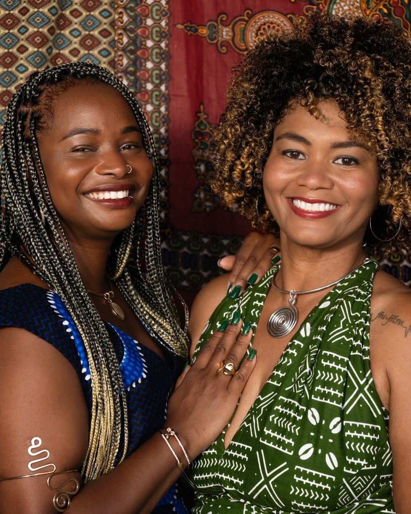
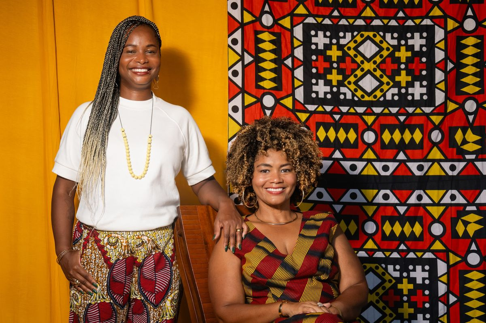

Oficina on-line · para estudantes de Psicologia
Psicologia antirracista na prática
Um encontro de trocas, não uma aula. Vamos pensar juntas e juntos o que é ser psicóloga ou psicólogo antirracista quando a terapia vive sob pressa e as respostas prontas estão no celular.
Quero participarAbre o formulário de inscrição. Dúvidas: @psico.daspretas no Instagram.
- Formato
- On-line, ao vivo
- Duração
- 90 minutos
- Data
- Sábado, 12 de dezembro
Para quem é
Estudantes de Psicologia, pessoas recém-formadas e quem já atende e quer aprender a escutar raça, território e tempo na clínica. Não precisa de experiência prévia.
O que vamos trabalhar
- 1Ser antirracista na clínica quando tudo pede pressa e resposta pronta.
- 2Presença e vínculo: o que só a relação terapêutica oferece.
- 3Cuidar das próprias emoções para sustentar a prática clínica.
- 4Escutar raça e território a partir de quatro autores da psicologia negra.
Como será
Um encontro ao vivo pelo Meet no sábado, 12 de dezembro, com todas as pessoas na mesma sala. Horário e valor ainda vão ser confirmados.

Quem conduz
Mariana e Priscila são psicólogas e fundadoras da Psicologia das Pretas, uma casa de cuidado afrocentrado, antirracista e interseccional. São cinco anos de clínica ininterrupta, e a vontade de que esse cuidado não dependa de duas pessoas sozinhas.
Cuidados
- Compartilhar experiências pessoais é sempre opcional.
- O encontro pode ser gravado, e isso é combinado com a turma logo no início.
- O que é dito no grupo fica no grupo.
- Câmera e microfone são convites: dá para participar pelo chat.
Quer participar?
Sábado, 12 de dezembro, on-line. Horário e valor ainda vão ser confirmados: faça sua inscrição e a gente avisa você primeiro.
Quero participarDúvidas? Chame @psico.daspretas no Instagram.